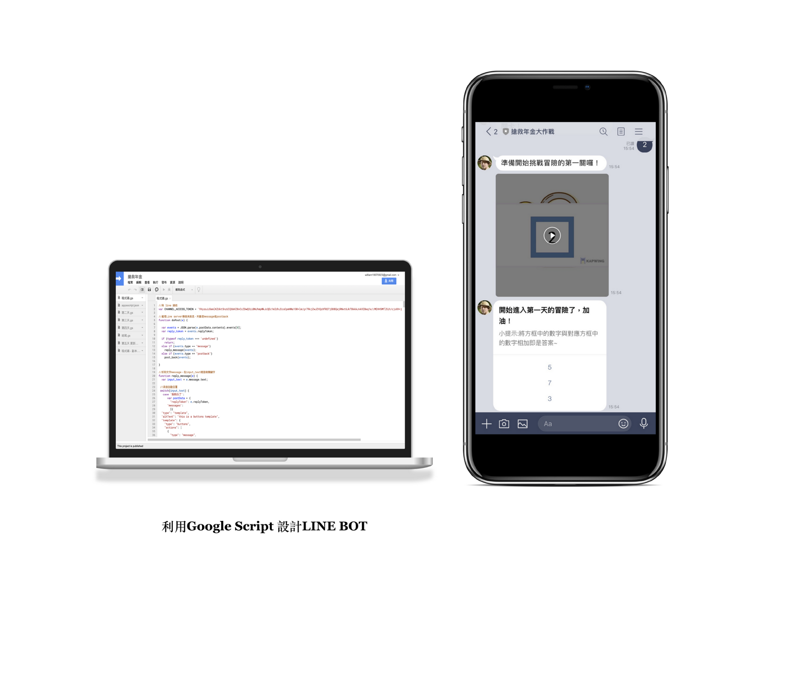

>
Line Bot 認知訓練遊戲
此專案針對居住於台北市 55歲至75歲 ，並且已退休之年長者，設計一款用於認知訓練之LINE BOT 機器人。本企劃之目標在於希望透過LINE BOT 之介入，可以有效訓練並提升長輩之認知能力中的工作記憶。設計概念參考「 三張犁之田鼠在哪裡 」之認知訓練活動，依據此認知訓練內容進行發想與延伸，進而設計應用於LINE BOT 中的訓練遊戲，並持續進行五天，遊戲透過工作記憶中之轉換、抑制、維持、運算等，進行設計。
專案負責項目：負責程式碼之研究與共同開發、概念設計。
訓練前：需先將設計好之LINE BOT 透過ID 與QR CODE 之方式加為個人好友。
第一天：為單純的數字運算，做一次加法，只需記得有經運算過的數字（一格），然後算出最終答案。
第二天：要記得所有的數字，沒經運算的也要記得，過程中會隨著關卡而增加要記得數字數目。
第三天：開始需要做兩次加法，意即會有兩個數字需要經過運算，同樣答案需要記得運算過的數字與未經運算的數字結果。
第四天：除了加法外增加減法運算，同樣答案需要記得運算過的數字與未經運算的數字結果。
第五天：運算數字數目增加至四格，其餘如同第四天一樣，同時有加法與減法須運算，答案需記得運算過的數字與未經運算的數字結果。
透過讀取關鍵字與選擇題之方式，與使用者互動